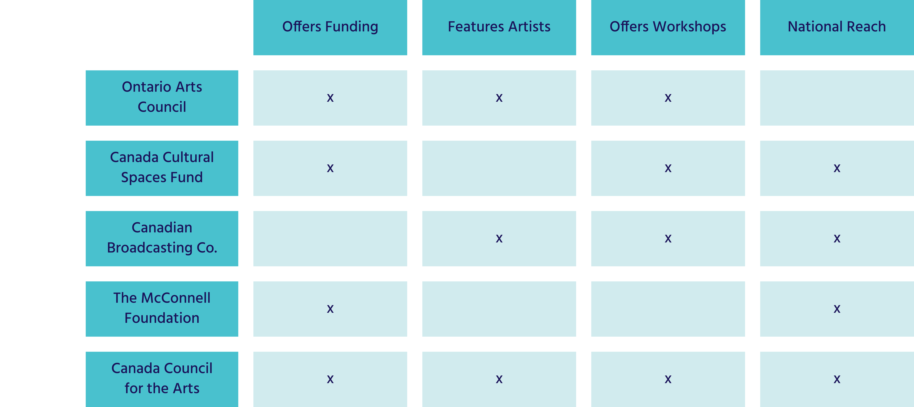

Competitive Analysis
Canada Council for the Arts Original Color Analysis
The Canada Council for the Arts website currently has a split complementary color palette. Unfortunately, after further inspection it is found that the 3 secondary colors do not fully pass AAA standards with regular text and the secondary blue doesn't pass regular, large or the graphic components test.
Recommendation: Adjust the colors to allow for better readability for all viewers including the visually impaired. Also bring in Canadian color palette to tie into canada government branding so users understand it is government funding.
User Persona

Sadie James
Age: 33
Location: British Columbia
Industry: Painter
Income: $29 per hour
“I'm not sure that I can maintain the lifestyle that I want with just my art. It's really hard to find different funding opportunities right now.”
Interests
Art
Participating in Workshops
Traveling
Museums Exploration
Festivals
Needs & Goals
Access to financial Aid
Information on gallery opportunities
To be able to live off her work
Money for supplies to make her pieces
Pain Points
Difficulty making a stable income from selling her pieces on her own
Issues getting her name more widely spread and recognized. Finding a reliable community and networking would help her find more opportunities so promote her pieces.
Her work is expensive to make between the canvases, paints, etc., additional funding would really help her.
User Path
Artists would typically want to go to the Canada Council for the Arts (CCftA) website to find funding opportunities, grants, and resources that can help fund their artistic career and to achieve higher visibility in the art world.
The task for this user is to find funding options offered by CCftA and then apply for a grant.